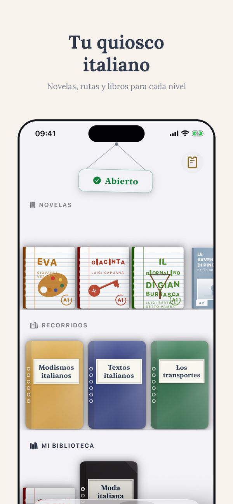
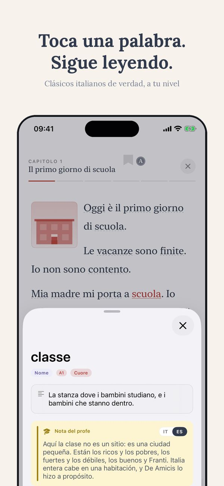
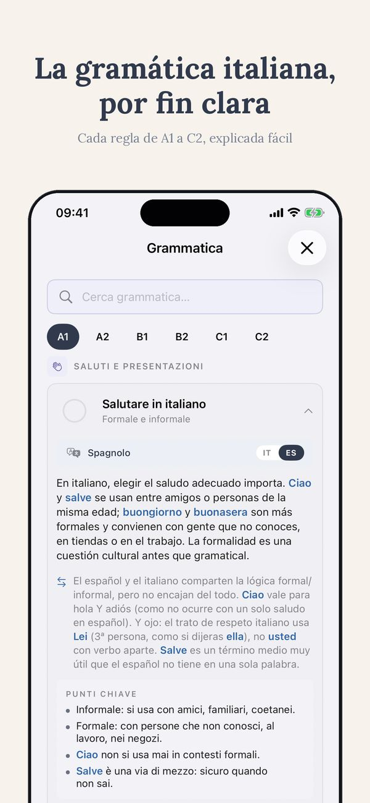
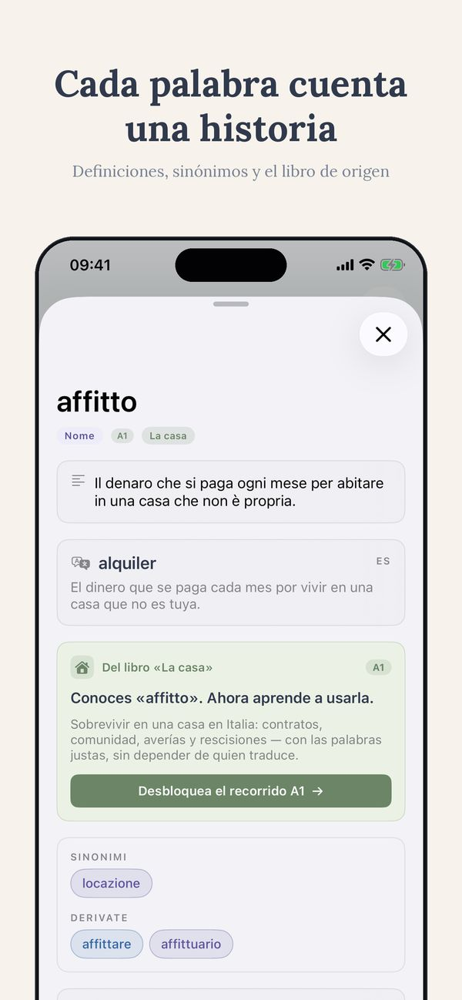
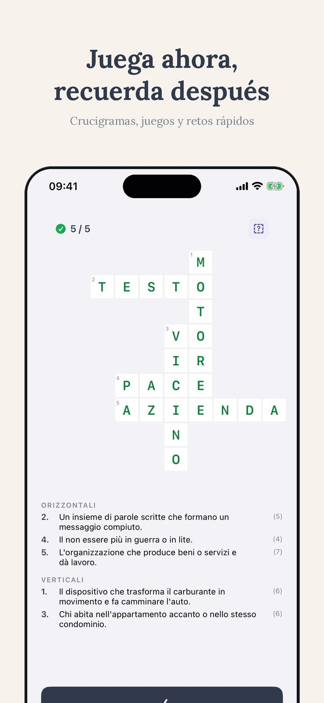

Test de nivel gratuito · Thuis Italiaans
¿Cuál es mi nivel de italiano?
“Intermedio” puede significar cinco cosas distintas. Así se consigue una respuesta de verdad en la escala A1-C2: un autotest de dos minutos y un test gratuito que mide las cuatro destrezas por separado.
Gratis, unos 15 minutos, resultado inmediato
Hacer el test de nivelPor qué “intermedio” no significa nada
Pregunta a cinco personas qué significa “italiano intermedio” y tendrás cinco respuestas. Por eso Europa acordó una escala común, el MCER, con seis niveles de A1 a C2. Todo curso, examen o manual serio se refiere a ella. En una línea cada uno:
- A1: sobrevives a pedir un café y a presentarte.
- A2: manejas cualquier situación previsible, compras, citas, charla sobre tu día.
- B1: mantienes una conversación de verdad, incluso cuando se sale del guión.
- B2: trabajas en italiano y ves la televisión sin sufrir.
- C1: percibes registros y modismos; la literatura se abre.
- C2: casi nativo, entiendes los chistes.
Así que la pregunta real no es “¿soy intermedio?” sino “¿dónde estoy en esta escala, destreza por destreza?”
Un aviso para hispanohablantes: como el italiano se entiende mucho desde el primer día, es fácil sobrestimarse. Entender no es hablar, y los falsos amigos cobran su peaje justo cuando te confías.
La autoevaluación en dos minutos
Antes de cualquier test, prueba esta lista honesta. Encuentra la última afirmación que sea verdad para ti:
- Puedo pedir una comida y entender la respuesta del camarero: estás al menos en territorio A2.
- Puedo hablar de mi trabajo diez minutos y que me entiendan: alrededor de B1.
- Puedo seguir una película sin subtítulos en la mayoría de las escenas: alrededor de B2.
- Puedo defender una postura y notar la diferencia entre italiano formal e informal: alrededor de C1.
Útil, pero grueso, y con un sesgo conocido: nos juzgamos por nuestra mejor destreza. Lo que nos lleva al problema de verdad.
Tus cuatro destrezas no están al mismo nivel
Casi nadie “es B1”. Eres B1 leyendo, A2 escuchando, A2 hablando y B1 escribiendo, o cualquier otra mezcla. La lectura suele ir un nivel por delante, porque tú controlas la velocidad, y en el caso de un hispanohablante a veces dos, por el parecido entre las lenguas. Escuchar y hablar van detrás, porque los italianos de verdad no frenan por ti. Una sola etiqueta esconde exactamente la información que necesitas: qué destreza trabajar.
Por eso mi test de nivel gratuito mide las cuatro destrezas por separado. Dura unos quince minutos y el resultado es inmediato: no una letra, un perfil. Dos alumnos con el mismo “B1” pueden salir con dos planes completamente distintos.
Quince minutos, cuatro destrezas, una respuesta clara
Gratis, sin muro de registro delante de tu resultado. Sales sabiendo tu nivel por destreza y tu punto de partida.
Gratis, unos 15 minutos, resultado inmediato
Hacer el test de nivel¿Test gratuito o certificado oficial?
Responden a preguntas distintas. Un test de nivel gratuito es para ti: te dice dónde empezar y qué trabajar, hoy, sin coste. Un certificado oficial, CILS, CELI o PLIDA, es para una institución: ciudadanía, universidad, un empleador. Cuesta dinero, se convoca pocas veces al año y demuestra sobre papel lo que el test gratuito te dijo en quince minutos.
El orden práctico: primero el test gratuito, siempre. Si necesitas el certificado, el test te dice si estás listo para reservar la convocatoria o si ese dinero rendiría más en tres meses adicionales de preparación. Para la ciudadanía italiana el recorrido es específico: aquí está explicado.
Qué hacer con el resultado
Un nivel solo es útil si cambia lo que haces después.
- Elige material de tu nivel. Un contenido un nivel demasiado alto es el asesino de motivación más rápido que existe. Libros, ejercicios y clases deben quedar justo por encima de tu zona de confort, no dos pisos más arriba. Empieza por los libros graduados por nivel y los ejercicios gratis.
- Trabaja la destreza rezagada. Si hablar va por detrás, más ejercicios de gramática no lo arreglan. Ahí es donde ayuda una clase: alguien que oye tu italiano y se adapta a él. La primera clase de prueba es gratis, online desde donde estés.
- Repite el test a los tres meses, no a las tres semanas. Por debajo de tres meses, las diferencias caen dentro del margen de error de cualquier test. Repetirlo a menudo produce frustración, no información.
Preguntas frecuentes
¿Qué fiabilidad tiene un test de nivel online?
Los buenos te sitúan con un margen de medio nivel, que basta para elegir material y punto de partida. El desglose por destreza importa más que la etiqueta única: te dice qué trabajar, no solo dónde estás.
Leo a nivel B1 pero hablo a nivel A2. ¿Cuál es mi nivel?
Los dos, y es normal. La lectura suele ir por delante porque tú controlas el ritmo, y para un hispanohablante más todavía. Usa material B1 para leer y dedica tu tiempo de práctica a hablar hasta que se iguale.
¿Cada cuánto conviene repetir el test?
Como mucho cada tres meses. Por debajo, los cambios son menores que el margen de error del test, y repetirlo a menudo solo produce frustración.
Deja de adivinar. Mide.
Quince minutos, las cuatro destrezas por separado, resultado inmediato. Después, libros, ejercicios y clases al nivel que de verdad es el tuyo.
Gratis, unos 15 minutos, resultado inmediato
Hacer el test de nivelSee Ti in action
The CEFR path, exercises, edicola and graded Italian classics — from A1 to C2, in 14 languages.






Más de Thuis Italiaans
Libros graduados por nivel · Clases de italiano en línea · Más de 700 ejercicios gratis